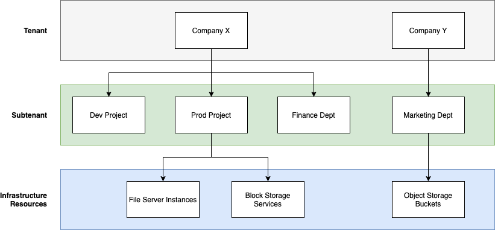

Servicios NetApp Keystone
Servicios NetApp Keystone
Tenancy y multi-tenancy en Keystone
 Sugerir cambios
Sugerir cambios
NetApp Keystone utiliza los conceptos de tenant y subtenant como entidades jerárquicas que poseen recursos de almacenamiento lógico. También se admite el concepto de multi-tenancy, donde varios clientes están ligados a un partner o proveedor de servicios. Aquí se utilizan indistintamente el partner de entidades y el proveedor de servicios.

|
En el contexto de Keystone, un único inquilino es un modelo operado por NetApp, mientras que un multi-tenancy es un modelo operado por partners. |
Un inquilino es la entidad de facturación principal definida en Keystone. Cada cliente que se incorpora en Keystone y posee una suscripción a los servicios, existe como un inquilino de Keystone. El cliente proporciona a NetApp un nombre y/o identificador de cliente con el fin de incorporar inquilinos y realizar el seguimiento de las fechas de suscripción y los términos de compromiso.
En multi-tenancy, un partner es un cliente/inquilino de NetApp en un entorno Keystone. El partner, a su vez, puede tener múltiples clientes o clientes vinculados a clientes finales/subinquilinos. En este modelo, los inquilinos/subclientes son los clientes de los proveedores de servicios y no tienen relación de facturación con NetApp.
Los subinquilinos Keystone existen completamente dentro de un inquilino principal con una relación muchos a uno. Los subinquilinos proporcionan separación lógica de recursos dentro de un tenancy y se usan como base para los informes de carácter general. Todos los recursos de almacenamiento (es decir, servicios de archivos, almacenamiento basado en bloques y almacenamiento de objetos) pertenecen a un subinquilino.

Modelo de suscripción en un entorno operado por NetApp (un único cliente)
-
El administrador de NetApp o GSSC crean una suscripción para un inquilino y una zona.
-
Los nombres de suscripción se derivan de la entidad de facturación para la que se ha suscrito el inquilino.
-
En la suscripción, se configuran la fecha de inicio y la duración del contrato.
-
Sólo puede haber una suscripción activa para cada zona de arrendatario
-
Una suscripción puede tener varios planes de tarifas y cada plan de tarifas se corresponde con un nivel de servicio.
-
Cada plan de tarifas tiene una capacidad comprometida por nivel de servicio.
-
Los niveles de servicio pueden incluir:
-
Extremo
-
Organización en niveles extrema
-
Rendimiento
-
Organización en niveles del rendimiento
-
Valor
-
Protección de datos para cada uno de los niveles de servicio
-
Protección de datos avanzada para obtener un nivel extremo, rendimiento y valor
-
Objetos de almacenamiento
-
Modelo de suscripción en un entorno multi-tenant
-
Los proveedores de servicios son clientes de Keystone y tienen suscripciones como inquilinos. Las suscripciones se basan en:
-
Compromiso por nivel de servicio y zona
-
Cargado sobre la capacidad asignada con un mínimo de 100 TIB
-
Las tarifas por ráfaga aplican para el 100-120 % de la capacidad comprometida
-
-
NetApp cobra a los proveedores mensualmente, como parte de los términos de tenancy que suelen tener.
-
Para que un nivel de servicio esté disponible para los inquilinos, el proveedor de servicios o el partner debe contar en primer lugar con una Keystone para el nivel de servicio.
-
El proveedor de servicios crea suscripciones de inquilino por nivel de servicio, zona y mínimos flexibles.
-
Los proveedores de servicios pueden vender más capacidad a sus clientes de la que han adquirido a NetApp (exceso de suscripción). Por lo tanto, la capacidad utilizada por los inquilinos no está limitada por la capacidad que el proveedor de servicios ha suscrito.
-
Los inquilinos pueden utilizar la capacidad de almacenamiento por encima de la cantidad suscrita, que aparece como "en ráfaga" tras los informes de uso.
-
Los informes de uso de inquilinos están disponibles para los partners para su visualización diaria o mensual.
-
Los inquilinos pueden crear suscripciones durante más tiempo en comparación con la suscripción de Keystone correspondiente, pero se mostrará un mensaje de advertencia al cliente final durante esa actividad.
-
La suscripción a Keystone para un partner la configuran administradores de NetApp o GSSC. La gestión de la suscripción de Keystone y las suscripciones de inquilinos es realizada por un usuario con el rol de administrador del partner.
-
Los usuarios con roles de administrador de inquilino solo pueden ver la suscripción de inquilinos (no la suscripción a Keystone del partner). Pueden actualizar la suscripción para cambiar la capacidad y el nivel de servicio. Pueden aumentar las solicitudes de servicio para suscripciones adicionales.
-
El administrador de partners puede crear otra suscripción cuando la suscripción existente haya caducado o bien para una fecha futura en la que la suscripción existente ya no sea válida. La fecha de inicio de una nueva suscripción debe ser superior o igual a la fecha de finalización actual.